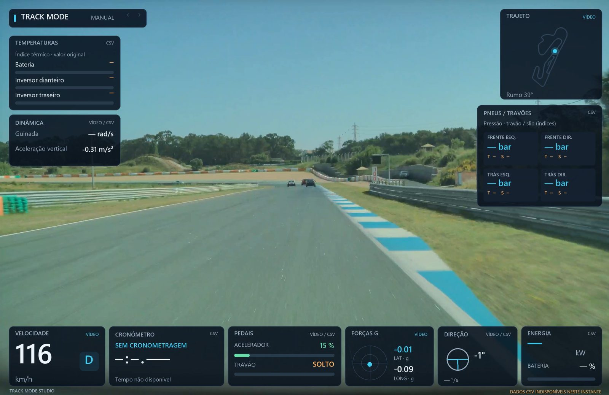
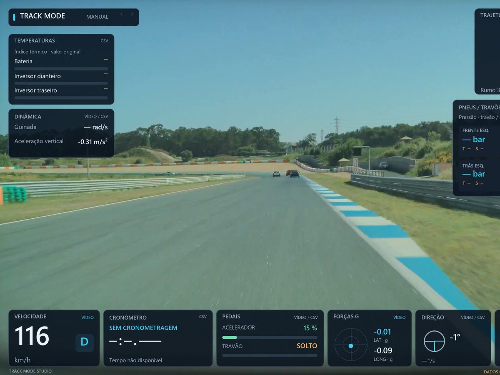

Automatic sync
Video and telemetry are lined up using the data embedded in the video itself. No manual offsets.
Track Mode Studio takes the lap video and telemetry your Tesla records in Track Mode, lines them up on its own and exports a video with speed, lap times, G-forces, map and pedals on screen.


Real screenshots from a track session in the current Windows build.
What it does
From the files your car already records to a video you can share, without lining anything up by hand.
Video and telemetry are lined up using the data embedded in the video itself. No manual offsets.
Every lap, its time and the gap to your best lap, as you drive it.
Throttle, brake, steering, power and G-forces in panels you can move, resize or hide.
The track drawn from your GPS, with your position on it. No map downloads needed.
Start from Race, Engineering or Vertical 9:16 for Shorts and Reels, then make it yours.
Panels for data your session doesn't have stay hidden. Sessions without lap timing still work.
How it works
The lap video and the telemetry file your Tesla saves to its USB drive after a session.
It pairs each video with its telemetry and lines them up automatically.
Start from a ready layout, choose a lap or keep the whole session.
1080p by default, or the original resolution. Landscape for YouTube, vertical for Shorts and Reels.
Privacy
Video and telemetry are processed on your own device. There is no Tesla account to connect and no password to share, and nothing is uploaded unless you choose to share the finished video.
Roadmap
Edit and export on your phone or tablet, right after the session.
Send a finished lap straight to YouTube and social apps.
Limited access
We're opening the beta to a few drivers at a time. If you take your Tesla to the track and record with Track Mode, tell us a little about your car and your sessions. Requests are reviewed by hand and do not grant access automatically.
Questions
Teslas with Track Mode that save lap video and telemetry after a session. Tell us your car when you request access.
No extra hardware. The video and telemetry come from the files your Tesla already records in Track Mode.
Testing starts on Windows. iPhone and Android are planned.
It still works. You get the video with speed, G-forces, map and pedals, and you can keep the whole session.
It is planned as a paid app. Pricing is not set yet.
Not yet. It is in beta and access is limited. Features may change or break along the way.